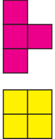
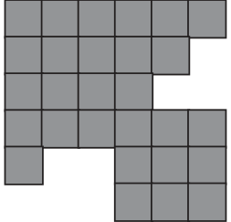
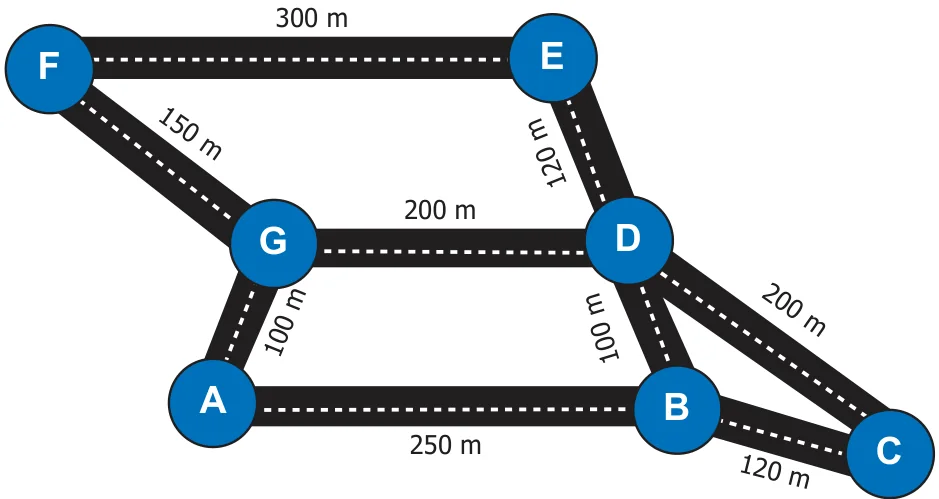

- A school has planned for a trip to Ooty. Using the route map, the school decides to visit the places such as Boat House, Adam Founatian and Botanical Garden.
- How much distance you have to travel to Botanical Garden from Ooty Boat House?
- Find the shortest route to Botanical from the Ooty Main Bus Stand.
- Mention the direction of Botanical Garden from Adams Fountain.
- In what direction, Ooty Boat House is situated from Ooty Main Bus Stand.
- Complete the following route map from Ooty Main Bus Stand to Botanical Garden.
Botanical Garden
Ooty
Main Bus Encourage students to plan for a trip to Stand some more places using map.
- Make a model of a fish using the given tetromino shapes.



- Complete the given rectangle using the given tetromino shapes.
\(= 3\) times
\(= 2\) times \(= 2\) times
- Shade the figure completely, by using five Tetromino shapes only once.
- Using the given tetrominoes with numbers on it, complete the 4 x 4 magic square ? 16 4 9 5 3 15 6 10 2 14 7 11 13 1 12 8
- Find the shortest route to Vivekanandar Memorial Hall from the Mandapam using the
given map.
Mandapam 6 km Pullivasal Island 2 km 1.5 km Vivekanandar Memorial Hall Krusadai Island
Challenge Problems
- Fill in 4 x 10 rectangle completely, using all the five tetrominoes twice.
- Fill in 8 x 5 rectangle completely, using all the five tetrominoes twice.
- Observe the picture and answer the following.
- Find all the possible routes from A to D.
- Find the shortest distance between E and C.
- Find all the possible routes between B and F with distance. Mention the shortest
route.
